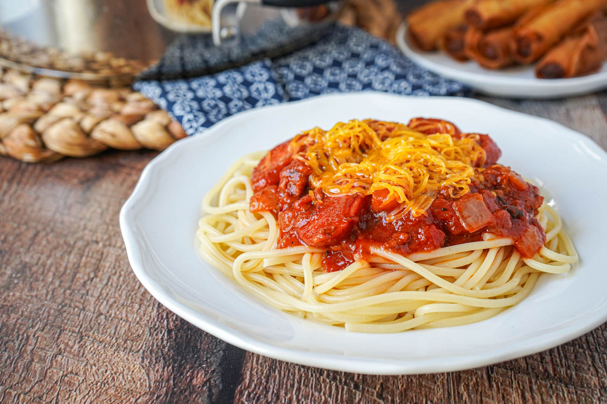

Filipino Spaghetti

Filipino spaghetti, also known as sweet spaghetti, is a sweet, meaty, and rich pasta dish that's a Filipino adaptation of Italian spaghetti with Bolognese sauce. It's often served at special occasions, especially children's birthdays, and is considered a comfort food in Philippine cuisine.
Ingredients
For the Spaghetti Sauce:
- 1 tablespoon cooking oil
- 1 onion, finely chopped
- 3 cloves garlic, minced
- 1 can (28 ounces) crushed tomatoes
- 1 can (6 ounces) tomato paste
- 1 tablespoon olive oil
- 1 teaspoon dried oregano
- 1 teaspoon dried basil
- Salt and pepper, to taste
For the Pasta:
- 1 pound (450g) spaghetti noodles
- Salt, for cooking pasta
For Toppings:
- 1/2 cup shredded cheddar cheese
- 1/4 cup sliced hotdogs or ham (optional)
- 1/4 cup diced green bell pepper (optional)
- Grated Parmesan cheese, for serving
Instructions
- Heat cooking oil in a large skillet or saucepan over medium heat. Add chopped onion and minced garlic, sauté until softened, about 2-3 minutes.
- Add ground beef, cook until browned, breaking it up with a spoon as it cooks.
- Stir in tomato sauce, tomato paste, banana ketchup, brown sugar, water, and soy sauce. Mix well to combine.
- Season with salt and pepper to taste. Bring the sauce to a simmer and let it cook for 15-20 minutes until thickened. Remove from heat and set aside.
- Cook spaghetti noodles according to package instructions until al dente. Drain, reserving about 1/2 cup of pasta water.
- Add cooked spaghetti noodles to the pot with the prepared spaghetti sauce. Toss to coat evenly. If the sauce is too thick, add some reserved pasta water to loosen it up.
- Transfer spaghetti to a serving platter or individual plates.
- Sprinkle shredded cheddar cheese over the top of the spaghetti.
- Optional: Garnish with sliced hotdogs or ham and diced green bell pepper for extra flavor.
- Serve hot, accompanied by grated Parmesan cheese on the side for sprinkling.